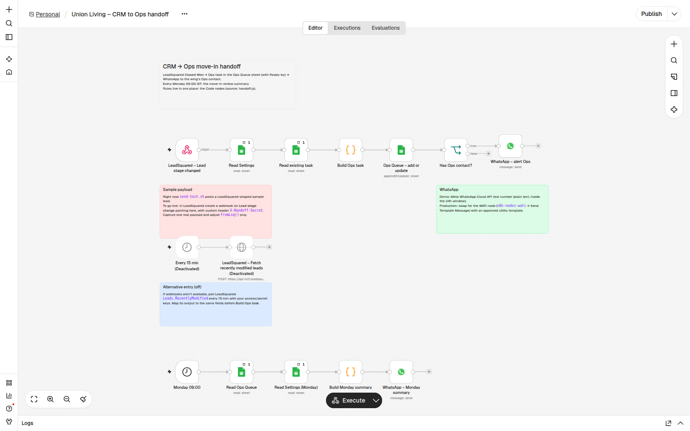

CRM → Ops move-in handoff
A small n8n automation for a co-living operator. When Sales closes a booking in LeadSquared, Ops hears about it within seconds, with the date the room has to be ready. Every Monday morning there's a summary of what's coming up and what's overdue.
The problem
An allotment tracker had 65 residents stuck before move-in: 29 marked Pending Move In and 36 marked Not Ready. All 35 who had a move-in date were already past it, by 26 to 138 days.
The cause wasn't slow cleaning. It was the handoff:
- Ops learns a room needs turning only when the resident arrives. Nothing tells them when Sales closes the deal.
- Friday-evening requests wait until Monday.
The process fix proposed to the Heads of Sales and Ops was:
- Closed Won creates an Ops task the same day.
- Ops marks the room Ready 2 working days before move-in (by Friday noon for Saturday-to-Monday move-ins).
- A 10-minute review every Monday of the next two weeks.
This workflow makes that process run without anyone having to remember it.
What it does
- A lead reaches Closed Won in LeadSquared, and LeadSquared calls the workflow.
- The workflow checks what Ops needs (bed, move-in date, gender, sales owner, phone) and flags anything missing in plain words.
- It works out Ready-by, the time the room must be ready (rules).
- It adds the task to the Ops Queue Google Sheet, or updates it if the same lead comes in again.
- It sends a WhatsApp to that wing's Ops contact.
- Every Monday at 09:00 IST, everyone listed gets the move-in review.
Ops closes the loop in the Sheet by changing Status: Pending Move In → Ready → Moved In. There's no new app to learn.

What Ops receives
New move-in: Priya S (Girls), Wing A A-204 R1 bed 2. Move-in Tue 3 Nov, room Ready by Fri 30 Oct 18:00. Sales: Rohit K.
When something is missing, the alert says so first:
⚠ Missing: move-in date, sales owner; No date – chase Sales. New move-in: Aman R (Boys), Wing B B-110 R2 bed 1. Move-in date not set. Sales: ?.
Monday 09:00:
Move-in review – Mon 2 Nov
Move-ins next 14 days: 1
Overdue (not Ready): 1
No date – chase Sales: 1
Waiting longest:
- Priya S (Wing A), 4 days
- Aman R (Wing B), 4 days
Full list: <sheet link>
Status
| Part | State |
|---|---|
| Rules (Ready-by, flags, Monday summary) | Built and tested, in Node and inside n8n |
| Workflow in n8n | Built, imported, webhook live with a secret header |
| Google Sheet + WhatsApp end-to-end | Waiting on account setup |
| Real LeadSquared connection | Sample payloads only. The field names are an assumption until one real payload is captured |
Next: how it works · set it up